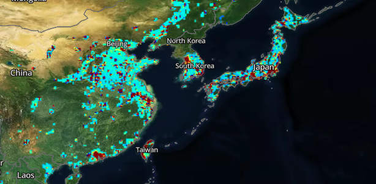
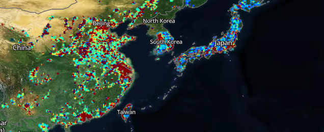
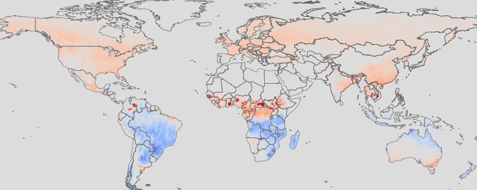
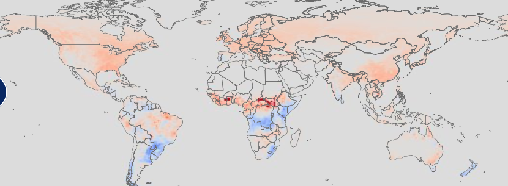
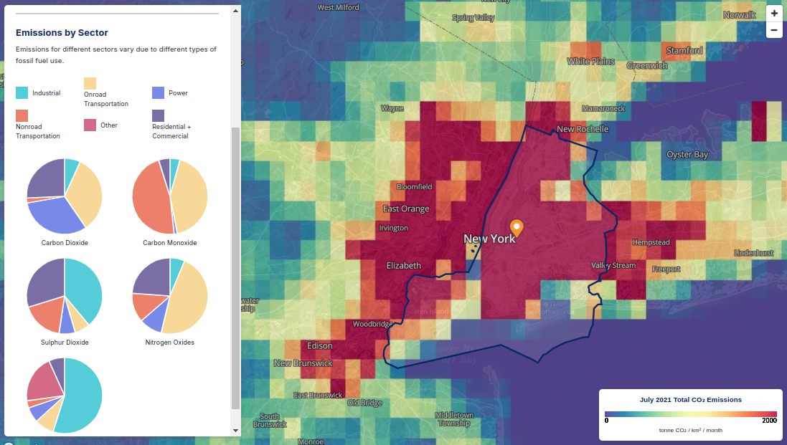

A record heat index of 144.1 degrees Fahrenheit was
recorded on Sunday, March 17, 2024. The highest since Alerta Rio began
keeping records in 2014.
Record heat index of 62.3C scorches Brazil’s Rio de Janeiro
Sorghum, common in Africa and Asia, is
drought-resistant and versatile, used for food, animal feed, and even
biofuel. It’s rich in fiber, antioxidants, and gluten-free as well. Both
grains play crucial roles in food security and are gaining popularity in
health-conscious diets globally.

Teff, a staple in Ethiopian cuisine, is gluten-free and
high in protein, iron, and calcium. It's used to make injera, a spongy
flatbread.
The following story is fictional, however the consequences are
completely real, according to data from the Intergovernmental Panel on
Climate Change (IPCC) fact sheet. On its sixth assesment
report , it is analyzed some dangers that threathen the stability of the
country on infraestructure, agricultural production, health and economy.
These scenearios are possible only if the world gets 1.5° Celcius warmer
than preindustrial period. And the Earth, has already got 1° Celcius
according to
NOAA
Climate change is not local to one only country. You can see the
comparison of Fossil Fuel carbon dioxide from the Open-source Data
Inventory for Anthropogenic CO₂ (ODIAC) from China and Japan between the
years 2000 and 2022.


As mentioned, these gasses are known as
Greenhouse Gases.
How do we exactly know the effects of the climate change? Think of climate
as a giant system where each one depends on each other. For example, the
water cycle can be modeled as a simple circular cycle of evaporation,
condensation, and precipitation, but there is more into it. So, warmer
temperatures intensify the water cycle, leading to more evaporation (and
thus drought) and heavier rainfall when the accumulated moisture is
released.
If we take a look at MiCASA
Land Carbon Flux
, we can see that globally, is releasing more carbon dioxide than what
it can store, thus worsening the chain of interelated climate factors,
accelerating world temperature increase, where red sectors mean is
releasing more greenhouse gasses and blue sectors those where its being
stored more than being released.
Land Carbon Flux in 2001

Land Carbon Flux in 2023

For instance, you could take a look at this graph from the Greenhouse
gas And Air Pollutants Emissions System (GRA²PES) dataset where is shown
the amount of metric tons for carbon dioxide, carbon monoxide, nitrogen
oxides, sulfur dioxide and particular matter during July 2021.

With a population of 8+ million people, the most amount of carbon
dioxide is emitted from transportation, power supply and residential or
commercial use. Its clear that big cities are the ones with most
emissions. We need to give people the enery they need, but today's
rhythm could cause the earth collapse and affect many of us.